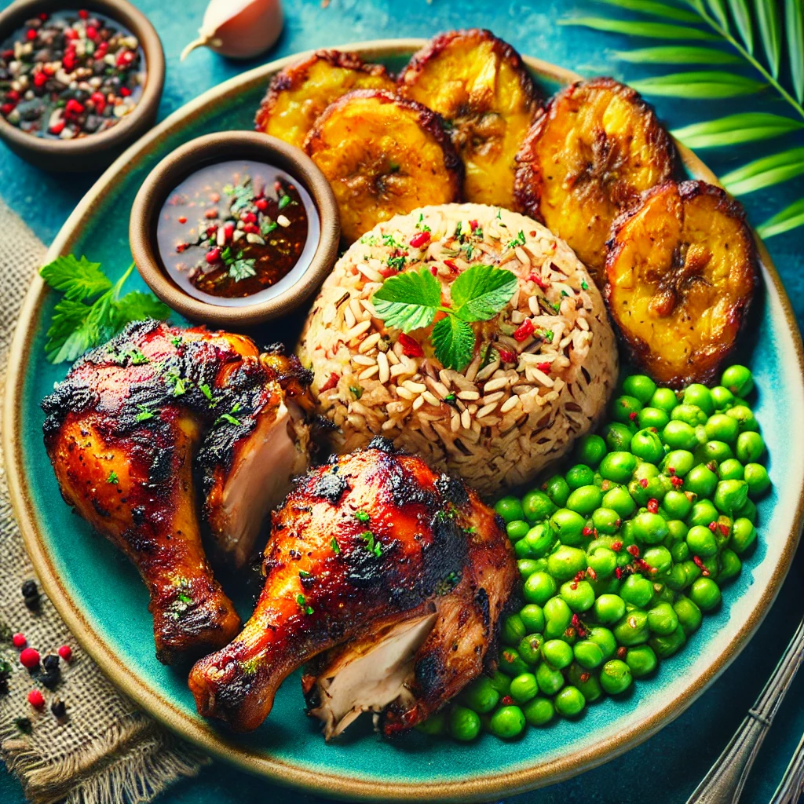
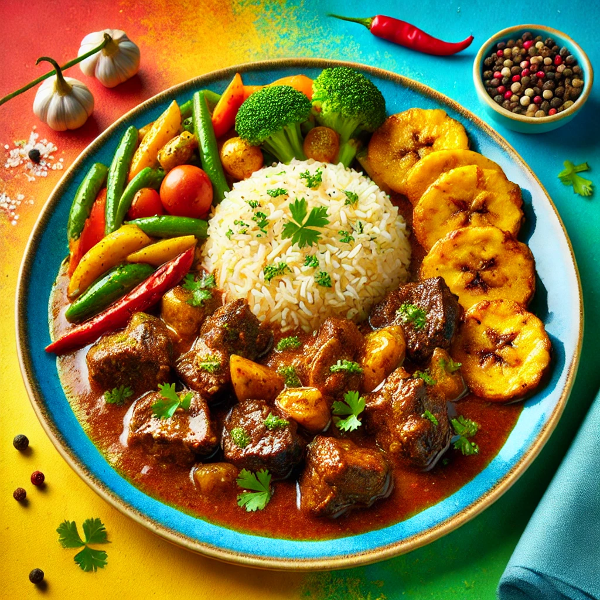
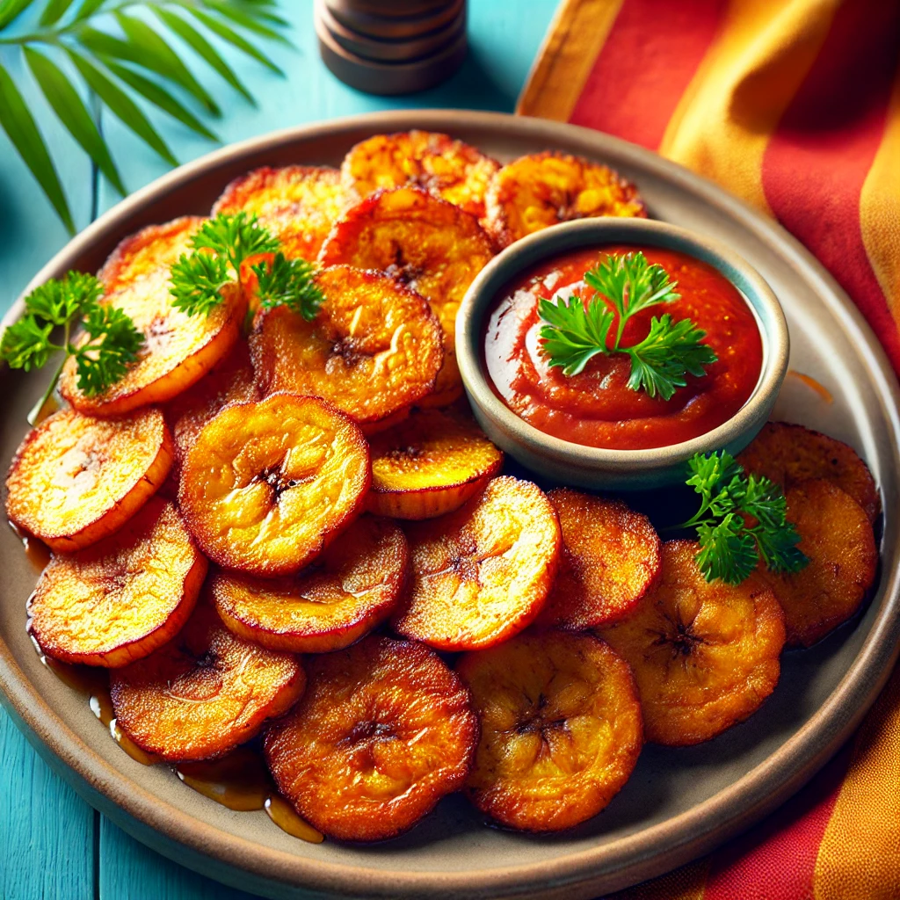

Our Full Menu
Explore our full range of Jamaican dishes, from traditional favorites to modern takes on Caribbean cuisine. We use only the freshest ingredients to create dishes that are bursting with flavor. Whether you're in the mood for a hearty meal or a light snack, we have something for everyone.

Jerk Chicken
Spicy and flavorful grilled chicken served with sides.

Ackee & Saltfish
Jamaica’s national dish served with plantains and dumplings.

Curry Goat
Tender goat meat cooked in a flavorful curry sauce with spices.

Oxtail
Succulent oxtail slow-cooked with butter beans and rich gravy.

Fried Plantains
Sweet and crispy fried plantains, perfect as a side dish.
Rice and Peas
Classic Caribbean rice dish cooked with coconut milk and red beans.
Future Item
Stay tuned for more delicious additions to our menu!